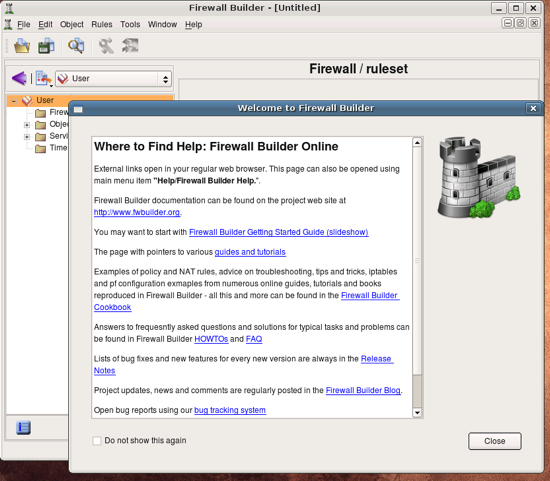
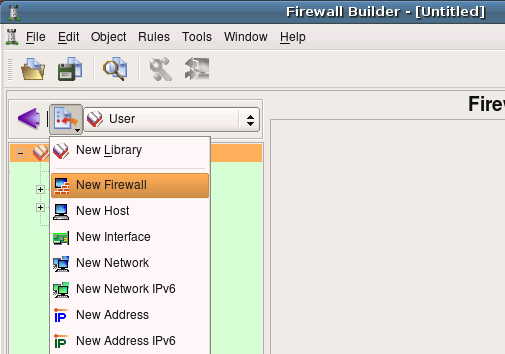
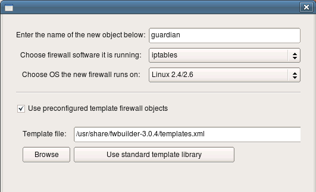
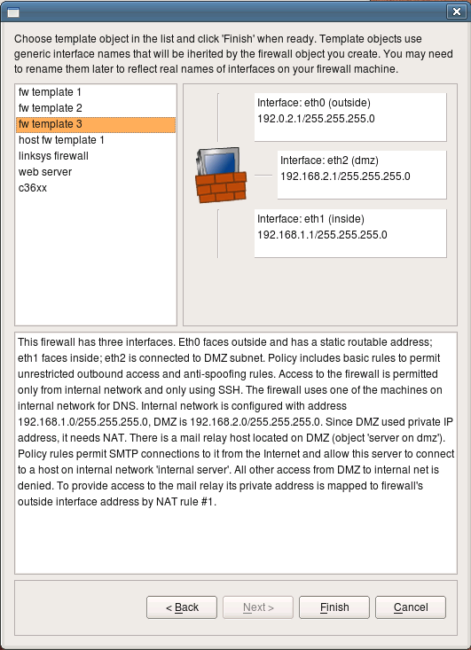
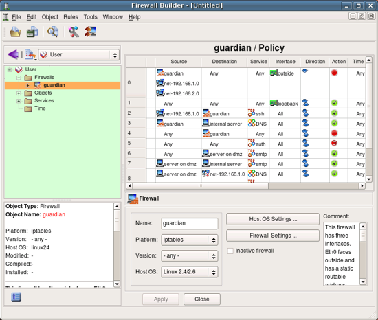

Author: vadim [at] fwbuilder [dot] org
http://www.fwbuilder.org
| Revision $Id:$ Author: vadim [at] fwbuilder [dot] org http://www.fwbuilder.org |
This guide presents an introduction to Firewall Builder. Firewall Builder (also known as fwbuilder) is a GUI firewall configuration and management tool that supports iptables (netfilter), ipfilter, pf, ipfw, Cisco PIX (FWSM, ASA) and Cisco routers extended access lists. Both professional network administrators and hobbyists managing firewalls with policies more complex that is allowed by simple web based UI can simplify management tasks with the application. The program runs on Linux, FreeBSD, OpenBSD, Windows and Mac OS X and can manage both local and remote firewalls.
Firewall Builder is packaged with most Linux distributions. If the package is not available in the base distribution, it usually can be found in "extras". You need to install package that has supporting API library libfwbuilder and package fwbuilder that contains Firewall Builder GUI and policy compilers. You can use your favorite package management tool sucn as yum or aptotude to find and install them. On FreeBSD and OpenBSD Firewall Builder is part of ports, you can find it in /usr/ports/security/fwbuilder.
If the OS you are using does not come with pre-built binary fwbuilder package, you can always build it yourself using our online installation instructions. Pre-built binary packages and source code tar.gz archives can be downloaded from from this page.
OS that ship fwbuilder package usually include system menu item that makes it easy to start the program. However if the menu item is not there or you have built the program from source, you can always launch it from the command line by just typing "fwbuilder" on the shell prompt:
$ fwbuilder
The program starts and opens main window and greeting dialog. The dialog provides links to the project web site where you can find more tutorials, FAQ, Firewall Builder CookBoook and other documentation, as well as bug tracking system and links to user forums and mailing list. Clicking on the link in the dialog opens corresponding web page in your web browser. This works the same on all supported OS: Linux, Windows and Mac OS X. You can always open this dialog later using an item in the main menu "Help".
Lets create our first firewall object. To do this, we'll use object creation menu that appears when you click on the icon in the small toolbar right above the object tree. Choose menu item "New Firewall" from the menu that appears.
The program presents wizard-like dialog that will guide you through the process of creation of the new firewall object. In the first page of the wizard you can enter the name for the new firewall object (here it is "guardian"), its platform ("iptables") and host OS ("Linux").
There are two ways new firewall can be created: you can use one of the preconfigured template firewall objects or create it from scratch. This tutotiral demonstrates the first method (using template object). To do this, check checkbox "Use preconfigured template firewall objects". Template can be taken from the library of template objects that comes with Firewall Builder package or from a file provided by the user. The latter is useful when administrator wants to distribute a library of predefined templates to other users in the enterprise. We are using one of the standard templates in this guide and therefore leave standard template library path and name in the "Template file:" input field. Click "Next" to move on to the next page of the wizard.
Note that template firewall object comes completely configured, including addresses and netmasks of its interfaces and some basic policy and NAT rules. This configuration is intended as a starting point only. You should reconfigure addresses of interfaces to match those used on your network and most likely will have to adjust rules to match your security policy.
This page of the wizard shows template objects and their configuration. Standard template objects represent firewalls with two or three interfaces, a host with one interface, web server or Cisco router. Choose firewall with three interfaces for this guide. Note that template comes with completely configured firewall object, including set of interfaces and their ip addresses and some basic firewall policy. You will see how addresses can be changed later on in this guide. Click "Finish" to create a new firewall object using chosen template.
Here is our new firewall object. Its name is guardian, it appears in the object tree in the left hand side of the main window in the folder Firewalls. When an object is selected in the tree, a brief summary of its properties appears in the panel under the tree. Double-clicking on the object in the tree opens it in the editor panel at the bottom of the right hand side panel of the main window. The editor for the firewall object allows the user to change its name, platform and host OS and also provides buttons that open dialogs for "advanced" settings for the firewall platform and host OS. We will inspect these little later in this tutorial.
Unfortunately not all columns of the policy view fit in the screenshot because of the limitations on the size of the images. You can always resize the main window to make it bigger.
Now would be a good time to save the data to a disk file. This is done in a usual way ising main menu File/Save As.